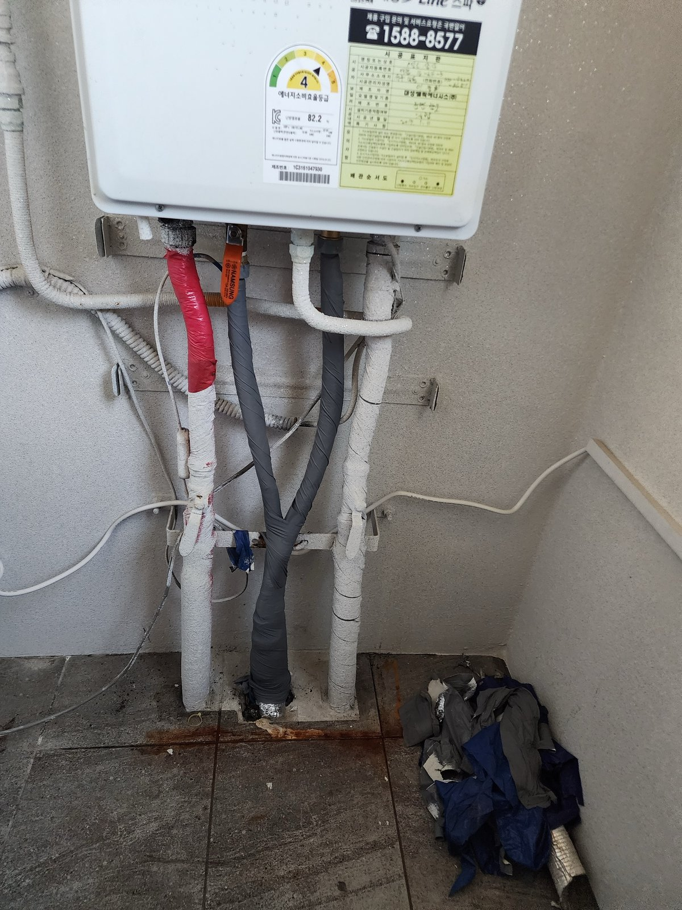
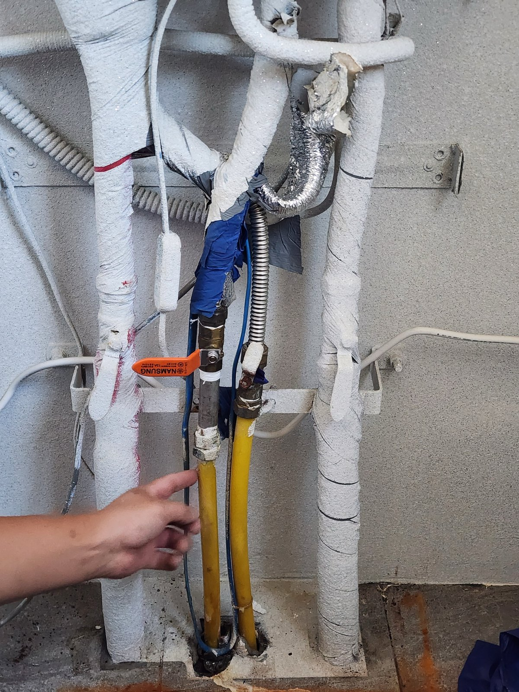
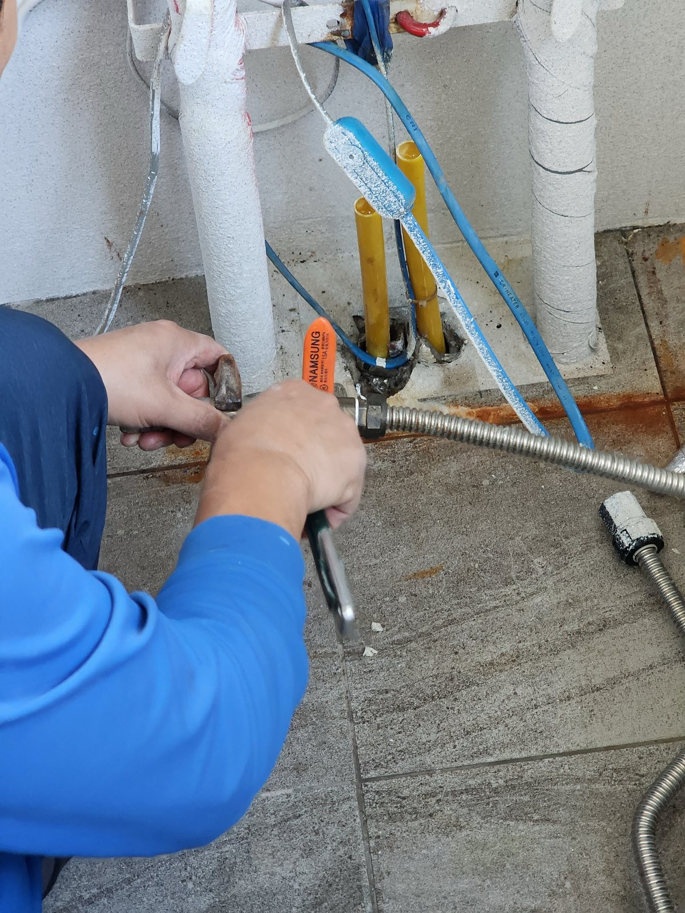
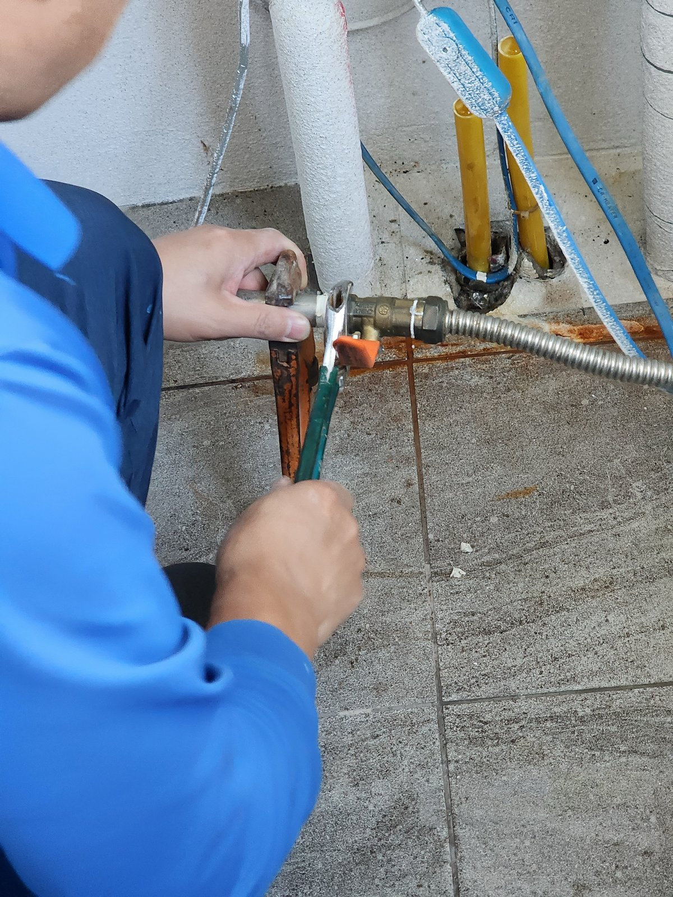
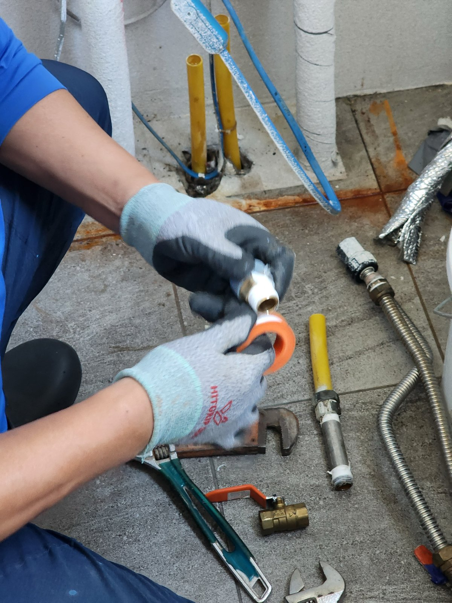
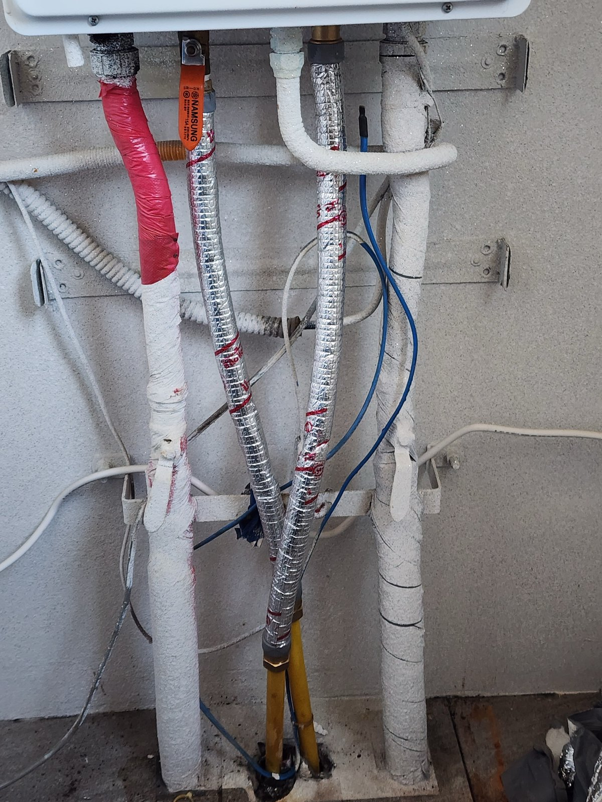

대전 송촌동 선비마을 1단지 보일러 배관 교체｜밸브·연결관을 새로 잇고 보온 마감

작업 핵심
현장 작업 한눈에 보기
- 현장
- 대전 선비마을 1단지 · 보일러 아래 배관
- 문제
- 보일러 아래 배관 연결부
바닥에 남은 녹물 자국 - 작업
- 기존 연결부 분리·새 밸브와 연결관 체결
이음부 조립·보온재 마감 - 결과
- 교체·보온 마감 사진 확인
누수시험 결과·소요시간은 미기재
대전 대덕구 송촌동 선비마을아파트 1단지 세대의 보일러 아래 배관 교체 기록입니다. 바닥에서 올라온 배관과 보일러를 잇는 연결부를 새 밸브·연결관으로 바꾸고 보온재로 감싸 마무리하기까지 사진 6장으로 소개합니다.
1. 작업 전 보일러 아래 배관
대전 대덕구 송촌동 선비마을아파트 1단지 세대의 보일러 배관 교체 현장입니다. 2026년 10월 7일 오후 사진을 순서대로 소개합니다.
작업 전 보일러 아래에는 바닥에서 올라온 배관과 연결 호스, 밸브가 모여 있고, 바닥에는 녹물 자국이 남아 있었습니다.

2. 기존 연결부를 풀고 새 밸브 체결
기존 연결부를 풀고 새 밸브를 맞췄습니다. 한쪽을 공구로 잡은 채 조여야 다른 연결부까지 비틀리지 않습니다.

3. 새 연결관 잇기
새 밸브에 주름형 연결관을 이었습니다.

4. 이음부 부속 조립
나사 이음부에는 테이프를 감아 부속을 조립했습니다.

5. 새 연결관에 보온재
교체한 연결관은 보온재로 감쌌습니다.

6. 마무리 후 보일러 아래
마무리한 보일러 아래 모습입니다. 첫 사진과 비교하면 연결관이 정리된 상태를 볼 수 있습니다.
7. 확인한 범위와 상담 안내
이번 기록은 밸브·연결관 교체와 보온 마감까지입니다. 누수 여부를 확인한 시험 결과와 총 작업시간은 자료가 없어 적지 않았습니다.
보일러 아래 바닥에 물 자국이나 녹물이 보이면 보일러 아래 배관 전체와 바닥 얼룩을 함께 찍어 상담해 주세요.